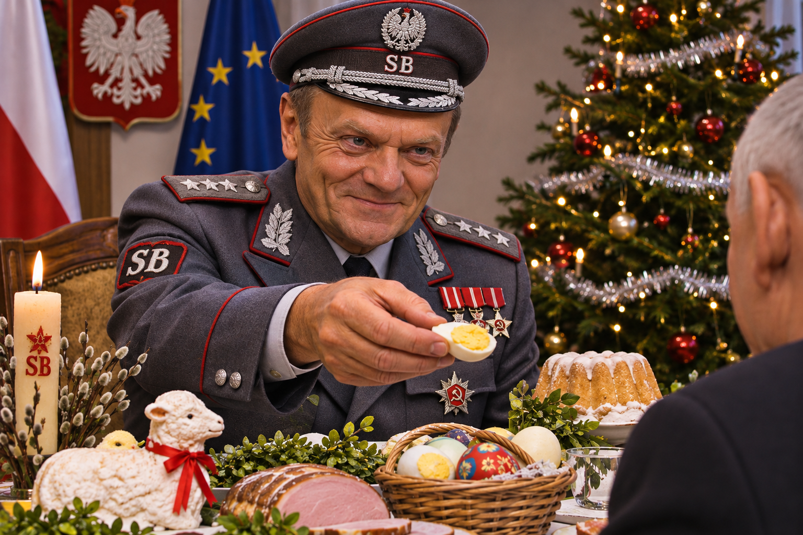
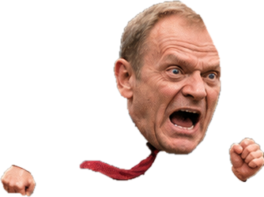

PZPR
Powstanie: 1948 · Koniec/status: 1990
rozwiązanie; część działaczy utworzyła SdRP
Prawomocnie skazani członkowie: N/D — liczba nieustalona (brak kompletnej, zweryfikowanej dokumentacji).
Lewica to poglądy polityczne, a „lewactwo” to określenie fanatyzmu, zakłamania i narzucania innym własnych, wynaturzonych i zwyrodniałych poglądów.

Od PRL do współczesności: powstania, podziały, zmiany nazw, połączenia i koalicje. Uwzględniono również wcześniejsze korzenie partii działających po 1980 roku.
Legenda: → następstwo lub zmiana nazwy · + połączenie · ⇢ rozłam · ⋯ współpraca/koalicja. Koalicja nie jest tym samym co partia.
Pełne liczby skazań nie są ustalone. Poniżej znajduje się wykaz przypadków, dla których odnaleziono publiczne źródła jednoznacznie wskazujące prawomocność. Brak danych w rekordach pozostałych formacji nie oznacza zera. Nie ma podstaw do przedstawienia wykazu jako kompletnego dla lat 1980–2026.
Źródła: ustawa o KRK · ewidencja partii. Stan opracowania: 14 listopada 2026 r.
Stan kwerendy: 14 listopada 2026 r. To publikowalny wykaz potwierdzonych przypadków, ale nie pełna liczba skazanych osób w partiach w latach 1980–2026. Nie należy porównywać liczebności między ugrupowaniami. Brak nazwiska lub partii nie oznacza braku skazań.
Metoda: osoba liczona tylko raz w obrębie formacji, nawet przy kilku wyrokach; każda potwierdzona sprawa jest osobną pozycją. Uwzględniono grzywny, wyroki z zawieszeniem i bez zawieszenia. Historyczne powiązanie z partią nie oznacza członkostwa w dniu wyroku ani odpowiedzialności samej partii. Nie uwzględniono samych zarzutów, wyroków nieprawomocnych i mandatów. Publiczne źródła nie dają podstaw do podania pełnej liczby wszystkich skazań.
Nie wpisano zera: brak dostatecznie zweryfikowanej kwerendy, aby określić liczbę i pełną listę osób.
Ważne wyłączenie: Stanisław Gawłowski — wyrok z 31.07.2025 był nieprawomocny; bez potwierdzenia późniejszego prawomocnego rozstrzygnięcia nie jest wliczony. PAP.
Ograniczenia: status wyroku może się zmienić po nadzwyczajnym środku zaskarżenia; nie jest to zaświadczenie z KRK ani dowód braku innych skazań. Powiązania partyjne w przeszłości opisano, nie przesądzając o członkostwie w dniu czynu. W przypadku wyroków zatartych konieczna jest dodatkowa ostrożność prawna.
Ta część jest oddzielona od licznika prawomocnie skazanych polityków. Status ustalony na 14.11.2026 r.
18.03.2026: Sąd Okręgowy w Świdnicy wymierzył w pierwszej instancji 6 lat i 6 miesięcy pozbawienia wolności za nieudzielenie pomocy małoletniej pokrzywdzonej przestępstwami seksualnymi oraz czyny dotyczące znęcania się nad zwierzętami. Wyrok nieprawomocny: apelacje złożyły prokuratura i obrona; według informacji z października rozprawę odwoławczą wyznaczono na 30.11.2026. Nie jest liczona w zestawieniu prawomocnych skazań.
02.10.2026: Sąd Apelacyjny we Wrocławiu prawomocnie utrzymał karę 25 lat więzienia za liczne przestępstwa seksualne, w tym wobec małoletnich, oraz przestępstwa dotyczące znęcania się nad zwierzętami i inne czyny. Nie jest przypisany do PO/KO ani żadnej partii na podstawie relacji osobistej z byłą działaczką.
To rozbudowany przegląd historyczny, a nie kompletny odpis sądowego rejestru wszystkich partii. „Historyczna” oznacza ugrupowanie, którego działalność ustała lub nie jest tu potwierdzony bieżący status rejestrowy. Przy sprawdzaniu statusu prawnego i dokładnych dat należy korzystać z rejestru partii.
Źródła do dalszej weryfikacji: Sąd Okręgowy w Warszawie – rejestr partii · PKW · Archiwum Partii Politycznych PAN.
Powstanie: 1948 · Koniec/status: 1990
rozwiązanie; część działaczy utworzyła SdRP
Prawomocnie skazani członkowie: N/D — liczba nieustalona (brak kompletnej, zweryfikowanej dokumentacji).
Powstanie: 1949 · Koniec/status: 1989
przekształcenie w PSL „Odrodzenie”
Prawomocnie skazani członkowie: N/D — liczba nieustalona (brak kompletnej, zweryfikowanej dokumentacji).
Powstanie: 1937 · Koniec/status: działa
historyczna partia, nie mylić z UD
Prawomocnie skazani członkowie: N/D — liczba nieustalona (brak kompletnej, zweryfikowanej dokumentacji).
Powstanie: 1979 · Koniec/status: historyczna
opozycja niepodległościowa; późniejsze rozłamy
Prawomocnie skazani członkowie: N/D — liczba nieustalona (brak kompletnej, zweryfikowanej dokumentacji).
Powstanie: 1980 · Koniec/status: działa
związek zawodowy, nie partia; źródło wielu środowisk
Prawomocnie skazani członkowie: N/D — liczba nieustalona (brak kompletnej, zweryfikowanej dokumentacji).
Powstanie: 1982 · Koniec/status: 2010
organizacja opozycyjna, nie partia
Prawomocnie skazani członkowie: N/D — liczba nieustalona (brak kompletnej, zweryfikowanej dokumentacji).
Powstanie: 1990 · Koniec/status: 1999
następstwo środowiska PZPR; współtworzenie partyjnego SLD
Prawomocnie skazani członkowie: N/D — liczba nieustalona (brak kompletnej, zweryfikowanej dokumentacji).
Powstanie: 1991 · Koniec/status: 1999
sojusz wyborczy, od 1999 osobna partia
Prawomocnie skazani członkowie: N/D — liczba nieustalona (brak kompletnej, zweryfikowanej dokumentacji).
Powstanie: 1999 · Koniec/status: 2021
połączenie z Wiosną → Nowa Lewica
Prawomocnie skazani członkowie: N/D — liczba nieustalona (brak kompletnej, zweryfikowanej dokumentacji).
Powstanie: 1992 · Koniec/status: działa
założona przez działaczy lewicy solidarnościowej i post-PZPR
Prawomocnie skazani członkowie: N/D — liczba nieustalona (brak kompletnej, zweryfikowanej dokumentacji).
Powstanie: 1987 · Koniec/status: działa
kontynuacja tradycji socjalistycznej; rozłamy
Prawomocnie skazani członkowie: N/D — liczba nieustalona (brak kompletnej, zweryfikowanej dokumentacji).
Powstanie: 2004 · Koniec/status: historyczna
rozłam z SLD
Prawomocnie skazani członkowie: N/D — liczba nieustalona (brak kompletnej, zweryfikowanej dokumentacji).
Powstanie: 2010 · Koniec/status: 2013
zmiana nazwy → Twój Ruch
Prawomocnie skazani członkowie: N/D — liczba nieustalona (brak kompletnej, zweryfikowanej dokumentacji).
Powstanie: 2013 · Koniec/status: historyczna
następca Ruchu Palikota
Prawomocnie skazani członkowie: N/D — liczba nieustalona (brak kompletnej, zweryfikowanej dokumentacji).
Powstanie: 2015 · Koniec/status: działa
odrębna partia lewicowa
Prawomocnie skazani członkowie: N/D — liczba nieustalona (brak kompletnej, zweryfikowanej dokumentacji).
Powstanie: 2019 · Koniec/status: 2021
połączenie z SLD → Nowa Lewica
Prawomocnie skazani członkowie: N/D — liczba nieustalona (brak kompletnej, zweryfikowanej dokumentacji).
Powstanie: 2021 · Koniec/status: działa
połączenie SLD i Wiosny
Prawomocnie skazani członkowie: N/D — liczba nieustalona (brak kompletnej, zweryfikowanej dokumentacji).
Powstanie: 1990 · Koniec/status: 1991
współtworzyła Unię Demokratyczną
Prawomocnie skazani członkowie: N/D — liczba nieustalona (brak kompletnej, zweryfikowanej dokumentacji).
Powstanie: 1990 · Koniec/status: 1994
połączenie z UD → Unia Wolności
Prawomocnie skazani członkowie: N/D — liczba nieustalona (brak kompletnej, zweryfikowanej dokumentacji).
Powstanie: 1991 · Koniec/status: 1994
połączenie z KLD → UW
Prawomocnie skazani członkowie: N/D — liczba nieustalona (brak kompletnej, zweryfikowanej dokumentacji).
Powstanie: 1994 · Koniec/status: 2005
przekształcenie → Partia Demokratyczna
Prawomocnie skazani członkowie: N/D — liczba nieustalona (brak kompletnej, zweryfikowanej dokumentacji).
Powstanie: 2005 · Koniec/status: historyczna
kontynuacja UW
Prawomocnie skazani członkowie: N/D — liczba nieustalona (brak kompletnej, zweryfikowanej dokumentacji).
Powstanie: 2001 · Koniec/status: 2025
nowa partia; w 2025 przyjęła nazwę Koalicja Obywatelska
Prawomocnie skazani członkowie: N/D — liczba nieustalona (brak kompletnej, zweryfikowanej dokumentacji).
Powstanie: 2015 · Koniec/status: 2025
współtworzyła koalicję KO; integracja z PO
Prawomocnie skazani członkowie: N/D — liczba nieustalona (brak kompletnej, zweryfikowanej dokumentacji).
Powstanie: 2016 · Koniec/status: 2025
współtworzyła KO; uchwała o rozwiązaniu
Prawomocnie skazani członkowie: N/D — liczba nieustalona (brak kompletnej, zweryfikowanej dokumentacji).
Powstanie: 2018 · Koniec/status: działa
najpierw koalicja wyborcza; od 2025 także nazwa partii
Prawomocnie skazani członkowie: N/D — liczba nieustalona (brak kompletnej, zweryfikowanej dokumentacji).
Powstanie: 2021 · Koniec/status: działa
partia wyrosła z ruchu Szymona Hołowni
Prawomocnie skazani członkowie: N/D — liczba nieustalona (brak kompletnej, zweryfikowanej dokumentacji).
Powstanie: 2023 · Koniec/status: 2025
koalicja Polski 2050 i PSL, nie partia
Prawomocnie skazani członkowie: N/D — liczba nieustalona (brak kompletnej, zweryfikowanej dokumentacji).
Powstanie: 1990 · Koniec/status: historyczna
środowisko Jarosława Kaczyńskiego; współtworzyło PiS
Prawomocnie skazani członkowie: N/D — liczba nieustalona (brak kompletnej, zweryfikowanej dokumentacji).
Powstanie: 1989 · Koniec/status: historyczna
Zjednoczenie Chrześcijańsko-Narodowe, współtwórca AWS
Prawomocnie skazani członkowie: N/D — liczba nieustalona (brak kompletnej, zweryfikowanej dokumentacji).
Powstanie: 1995 · Koniec/status: historyczna
ugrupowanie Jana Olszewskiego
Prawomocnie skazani członkowie: N/D — liczba nieustalona (brak kompletnej, zweryfikowanej dokumentacji).
Powstanie: 1996 · Koniec/status: 2001
koalicja wyborcza wielu partii i NSZZ Solidarność
Prawomocnie skazani członkowie: N/D — liczba nieustalona (brak kompletnej, zweryfikowanej dokumentacji).
Powstanie: 2001 · Koniec/status: działa
nowa partia, m.in. środowiska PC i AWS
Prawomocnie skazani członkowie: N/D — liczba nieustalona (brak kompletnej, zweryfikowanej dokumentacji).
Powstanie: 2010 · Koniec/status: 2013
rozłam z PiS; część współtworzyła Polskę Razem
Prawomocnie skazani członkowie: N/D — liczba nieustalona (brak kompletnej, zweryfikowanej dokumentacji).
Powstanie: 2013 · Koniec/status: 2017
przekształcenie → Porozumienie
Prawomocnie skazani członkowie: N/D — liczba nieustalona (brak kompletnej, zweryfikowanej dokumentacji).
Powstanie: 2017 · Koniec/status: historyczna
partia Jarosława Gowina; późniejsze podziały
Prawomocnie skazani członkowie: N/D — liczba nieustalona (brak kompletnej, zweryfikowanej dokumentacji).
Powstanie: 2012 · Koniec/status: 2023
rozłam z PiS; nazwa zmieniona na Suwerenna Polska
Prawomocnie skazani członkowie: N/D — liczba nieustalona (brak kompletnej, zweryfikowanej dokumentacji).
Powstanie: 2023 · Koniec/status: 2024
połączenie z PiS
Prawomocnie skazani członkowie: N/D — liczba nieustalona (brak kompletnej, zweryfikowanej dokumentacji).
Powstanie: 2021 · Koniec/status: 2023
środowisko Adama Bielana; połączenie z PiS
Prawomocnie skazani członkowie: N/D — liczba nieustalona (brak kompletnej, zweryfikowanej dokumentacji).
Powstanie: 1989 · Koniec/status: 1990
wywodziło się z ZSL; współtworzyło PSL
Prawomocnie skazani członkowie: N/D — liczba nieustalona (brak kompletnej, zweryfikowanej dokumentacji).
Powstanie: 1989 · Koniec/status: 1990
współtworzyło zjednoczone PSL
Prawomocnie skazani członkowie: N/D — liczba nieustalona (brak kompletnej, zweryfikowanej dokumentacji).
Powstanie: 1990 · Koniec/status: działa
zjednoczenie nurtów ludowych
Prawomocnie skazani członkowie: N/D — liczba nieustalona (brak kompletnej, zweryfikowanej dokumentacji).
Powstanie: 2006 · Koniec/status: historyczna
rozłam w środowisku PSL
Prawomocnie skazani członkowie: N/D — liczba nieustalona (brak kompletnej, zweryfikowanej dokumentacji).
Powstanie: 1989 · Koniec/status: działa
Unia Polityki Realnej; liczne rozłamy
Prawomocnie skazani członkowie: N/D — liczba nieustalona (brak kompletnej, zweryfikowanej dokumentacji).
Powstanie: 2001 · Koniec/status: działa
zjednoczenie środowisk narodowych
Prawomocnie skazani członkowie: N/D — liczba nieustalona (brak kompletnej, zweryfikowanej dokumentacji).
Powstanie: 2012 · Koniec/status: działa
ruch; partia zarejestrowana później; współtworzy Konfederację
Prawomocnie skazani członkowie: N/D — liczba nieustalona (brak kompletnej, zweryfikowanej dokumentacji).
Powstanie: 2011 · Koniec/status: działa
ugrupowanie Janusza Korwin-Mikkego
Prawomocnie skazani członkowie: N/D — liczba nieustalona (brak kompletnej, zweryfikowanej dokumentacji).
Powstanie: 2015 · Koniec/status: 2022
zmiana nazwy → Nowa Nadzieja
Prawomocnie skazani członkowie: N/D — liczba nieustalona (brak kompletnej, zweryfikowanej dokumentacji).
Powstanie: 2022 · Koniec/status: działa
następca partii KORWiN
Prawomocnie skazani członkowie: N/D — liczba nieustalona (brak kompletnej, zweryfikowanej dokumentacji).
Powstanie: 2019 · Koniec/status: działa
projekt kilku środowisk; także partia
Prawomocnie skazani członkowie: N/D — liczba nieustalona (brak kompletnej, zweryfikowanej dokumentacji).
Powstanie: 2019 · Koniec/status: działa
ugrupowanie Grzegorza Brauna; odrębna droga
Prawomocnie skazani członkowie: N/D — liczba nieustalona (brak kompletnej, zweryfikowanej dokumentacji).
Powstanie: 1990 · Koniec/status: historyczna
partia Stanisława Tymińskiego
Prawomocnie skazani członkowie: N/D — liczba nieustalona (brak kompletnej, zweryfikowanej dokumentacji).
Powstanie: 1992 · Koniec/status: działa
ruch i partia Andrzeja Leppera
Prawomocnie skazani członkowie: N/D — liczba nieustalona (brak kompletnej, zweryfikowanej dokumentacji).
Powstanie: 1995 · Koniec/status: historyczna
ugrupowanie centroprawicowe
Prawomocnie skazani członkowie: N/D — liczba nieustalona (brak kompletnej, zweryfikowanej dokumentacji).
Powstanie: 2003 · Koniec/status: działa
obecnie Partia Zieloni
Prawomocnie skazani członkowie: N/D — liczba nieustalona (brak kompletnej, zweryfikowanej dokumentacji).
Powstanie: 2015 · Koniec/status: działa
ruch wyborczy, później partia
Prawomocnie skazani członkowie: N/D — liczba nieustalona (brak kompletnej, zweryfikowanej dokumentacji).
Powstanie: 2014 · Koniec/status: działa
środowisko samorządowe; także komitety wyborcze
Prawomocnie skazani członkowie: N/D — liczba nieustalona (brak kompletnej, zweryfikowanej dokumentacji).
Kto podejmuje decyzje, kto wybiera, skąd pochodzi i czym zajmował się wcześniej? Przegląd od przystąpienia Polski do UE (1 maja 2004 r.) do 9 listopada 2026 r.
Rola: proponuje prawo, wykonuje budżet i pilnuje przestrzegania prawa UE.
Szefowa: Ursula von der Leyen 🇩🇪 Niemcy, od 1 grudnia 2019; druga kadencja 2024–2029. Wcześniej m.in. niemiecka minister rodziny (2005–2009), pracy (2009–2013) i obrony (2013–2019) w rządach Angeli Merkel.
Poprzednicy od 2004: Romano Prodi 🇮🇹 (do listopada 2004), José Manuel Barroso 🇵🇹 (2004–2014), Jean-Claude Juncker 🇱🇺 (2014–2019).
Wybór: Rada Europejska proponuje kandydata, uwzględniając wybory do PE; Parlament wybiera większością swoich członków. Państwa proponują komisarzy; cały skład zatwierdza Parlament i powołuje Rada Europejska. Kadencja 5 lat.
Źródło: KomisjaRola: bezpośrednio wybierani europosłowie, współustawodawca i organ kontroli Komisji.
Przewodnicząca: Roberta Metsola 🇲🇹 Malta, od stycznia 2022; ponownie wybrana w lipcu 2024 na kadencję do stycznia 2027. Wcześniej europosłanka i wiceprzewodnicząca PE.
Przewodniczący od 2004: Pat Cox 🇮🇪 (do 2004), Josep Borrell 🇪🇸 (2004–2007), Hans-Gert Pöttering 🇩🇪 (2007–2009), Jerzy Buzek 🇵🇱 (2009–2012; wcześniej premier RP), Martin Schulz 🇩🇪 (2012–2017), Antonio Tajani 🇮🇹 (2017–2019), David Sassoli 🇮🇹 (2019–2022), Roberta Metsola 🇲🇹 (od 2022).
Wybór: europosłów wybierają obywatele co 5 lat; przewodniczącego wybierają europosłowie na odnawialne 2,5 roku.
Źródło: PERola: szefowie państw lub rządów wyznaczają ogólne kierunki polityki; nie uchwala zwykłych ustaw UE.
Przewodniczący: António Costa 🇵🇹 Portugalia, od grudnia 2024; wcześniej premier Portugalii (2015–2024) i burmistrz Lizbony.
Historia: przed grudniem 2009 nie było stałego przewodniczącego; przewodnictwo powiązane było z rotacją państw. Herman Van Rompuy 🇧🇪 (2009–2014; były premier Belgii), Donald Tusk 🇵🇱 (2014–2019; były premier RP), Charles Michel 🇧🇪 (2019–2024; były premier Belgii), António Costa 🇵🇹 (od 2024).
Wybór: szefowie państw/rządów wybierają większością kwalifikowaną na 2,5 roku, z możliwością jednego ponownego wyboru.
Źródło: Rada EuropejskaRola: ministrowie rządów państw członkowskich uchwalają prawo z PE i koordynują polityki.
Przewodnictwo: nie ma jednego stałego prezesa; państwa sprawują prezydencję rotacyjnie co 6 miesięcy (z wyjątkiem Rady do Spraw Zagranicznych, której przewodniczy wysoki przedstawiciel). W II połowie 2026 r. prezydencję sprawuje Cypr 🇨🇾; w I połowie 2025 sprawowała ją Polska 🇵🇱.
Skład: zależy od tematu obrad — np. ministrowie finansów lub spraw zagranicznych. Nie mylić z Radą Europejską ani Radą Europy (ta ostatnia nie jest organem UE).
Źródło: ConsiliumRola: interpretuje prawo UE i rozstrzyga sprawy w jego zakresie. Instytucja obejmuje Trybunał Sprawiedliwości i Sąd UE.
Prezes Trybunału Sprawiedliwości: Koen Lenaerts 🇧🇪 Belgia, od 2015; wcześniej sędzia Sądu Pierwszej Instancji, sędzia TS i wiceprezes TS. Poprzednicy w badanym okresie: Vassilios Skouris 🇬🇷 Grecja (2003–2015).
Powołania: sędziowie są mianowani za wspólnym porozumieniem rządów państw UE po opinii panelu z art. 255 TFUE, na odnawialne 6 lat. Sędziowie sami wybierają prezesa na odnawialne 3 lata, w tajnym głosowaniu. Obecny prezes nie wyznacza sam następcy.
Skład: w Trybunale po jednym sędzi z każdego państwa UE; w Sądzie UE po dwóch. Są także rzecznicy generalni.
Źródło: TSUERola: polityka pieniężna strefy euro; niezależny od rządów i instytucji politycznych.
Prezes: Christine Lagarde 🇫🇷 Francja, od listopada 2019; wcześniej dyrektor zarządzająca MFW i minister finansów Francji.
Poprzednicy od 2004: Jean-Claude Trichet 🇫🇷 (2003–2011), Mario Draghi 🇮🇹 (2011–2019; wcześniej prezes Banku Włoch).
Wybór: członków Zarządu EBC powołuje Rada Europejska większością kwalifikowaną po konsultacjach; kadencja 8 lat, bez możliwości ponownego wyboru.
Źródło: EBCRola: kontroluje dochody i wydatki UE; nie jest sądem rozstrzygającym sprawy karne.
Prezes: Tony Murphy 🇮🇪 Irlandia, od 2022; wcześniej wieloletni audytor ETO.
Poprzedni prezesi w badanym okresie: Juan Manuel Fabra Vallés 🇪🇸 (do 2005), Hubert Weber 🇦🇹 (2005–2008), Vítor Manuel da Silva Caldeira 🇵🇹 (2008–2016), Klaus-Heiner Lehne 🇩🇪 (2016–2022).
Wybór: po jednym członku z państwa, mianowanym przez Radę UE po konsultacji z PE na odnawialne 6 lat; członkowie wybierają prezesa na odnawialne 3 lata.
Źródło: ETORola: prowadzi wspólną politykę zagraniczną i bezpieczeństwa; przewodniczy Radzie do Spraw Zagranicznych i jest wiceprzewodniczącym Komisji.
Obecnie: Kaja Kallas 🇪🇪 Estonia, od grudnia 2024; wcześniej premier Estonii (2021–2024).
Historia: Javier Solana 🇪🇸 (1999–2009, wcześniejszy model funkcji), Catherine Ashton 🇬🇧 (2009–2014), Federica Mogherini 🇮🇹 (2014–2019), Josep Borrell 🇪🇸 (2019–2024), Kaja Kallas 🇪🇪 (od 2024).
Powołanie: Rada Europejska większością kwalifikowaną, za zgodą przewodniczącego Komisji; mandat powiązany z kadencją Komisji.
Źródło: ESDZJak czytać mapę: strzałki przedstawiają formalne procedury, nie prywatne zależności. Podane są wybrane najważniejsze funkcje i osoby od 2004 r.; nie jest to pełny imienny rejestr wszystkich komisarzy, sędziów i europosłów. Stan informacji: 9.11.2026. Szczegóły i aktualizacje należy sprawdzać w podlinkowanych źródłach instytucji.
Oficjalne zasady wyboru i powoływania władz UE · Art. 253 TFUE — wybór prezesa TSUE
Ważne rozróżnienie: partia krajowa (np. CDU), europejska partia polityczna (np. EPL/EPP) i frakcja posłów w Parlamencie Europejskim (np. grupa EPL) to trzy różne poziomy organizacji. Przynależność do frakcji nie oznacza automatycznie członkostwa krajowej partii w odpowiadającej jej europartii. Żadna frakcja samodzielnie nie „rządzi całą UE”.
| Osoba i stanowisko | Kraj / partia krajowa | Europejska rodzina / frakcja |
|---|---|---|
| Ursula von der Leyen — przew. Komisji | 🇩🇪 Niemcy · CDU | EPL (EPP) |
| Roberta Metsola — przew. Parlamentu | 🇲🇹 Malta · Partit Nazzjonalista | EPL (EPP) |
| António Costa — przew. Rady Europejskiej | 🇵🇹 Portugalia · Partido Socialista (PS) | PES / rodzina S&D |
| Kaja Kallas — wysoka przedstawicielka UE | 🇪🇪 Estonia · Eesti Reformierakond | ALDE / Renew Europe |
| Donald Tusk — były przew. Rady Europejskiej (2014–2019) | 🇵🇱 Polska · Platforma Obywatelska | EPL (EPP) |
| Jean-Claude Juncker — były przew. Komisji (2014–2019) | 🇱🇺 Luksemburg · CSV | EPL (EPP) |
| José Manuel Barroso — były przew. Komisji (2004–2014) | 🇵🇹 Portugalia · PSD | EPL (EPP) |
| Martin Schulz — były przew. Parlamentu (2012–2017) | 🇩🇪 Niemcy · SPD | PES / S&D |
| David Sassoli — były przew. Parlamentu (2019–2022) | 🇮🇹 Włochy · Partito Democratico | PES / S&D |
| Charles Michel — były przew. Rady Europejskiej (2019–2024) | 🇧🇪 Belgia · Mouvement Réformateur | ALDE / Renew Europe |
Przy stanowiskach pozaparlamentarnych wskazano rodzinę polityczną, a nie osobiste członkostwo w aktualnej frakcji PE. Partie i przynależności odnoszą się do okresów działalności publicznej; mogły się zmieniać.
Uwaga: określenia „lewica”, „centrum” i „prawica” są przybliżeniami; poglądy partii mogą różnić się w sprawach gospodarczych, społecznych i integracji europejskiej. Europartia zrzesza partie krajowe, natomiast frakcja PE zrzesza europosłów. To nie jest ta sama organizacja.
Party of European Socialists. Europejska rodzina partii socjaldemokratycznych: ochrona pracowników, usługi publiczne, prawa socjalne, zmniejszanie nierówności. Przykłady: niemiecka SPD, hiszpańska PSOE, portugalska PS. Pokrewna frakcja europarlamentarna: S&D — Postępowy Sojusz Socjalistów i Demokratów.
European People's Party. Chrześcijańska demokracja i konserwatyzm umiarkowany; gospodarka rynkowa, integracja europejska, tradycje społeczne. Przykłady: niemieckie CDU/CSU, polska PO i PSL. Frakcja w PE: EPL.
Alliance of Liberals and Democrats for Europe Party. Wolności obywatelskie, przedsiębiorczość, rynek i integracja europejska. Przykłady: estońska Partia Reform i belgijski MR. W PE wielu liberałów działa we frakcji Renew Europe, która nie jest identyczna z ALDE.
Priorytety: klimat, środowisko, prawa człowieka i transformacja energetyczna. European Green Party to europartia, a Greens/EFA to frakcja obejmująca również polityków regionalistycznych. Przykład: niemieccy Zieloni.
Konserwatyzm, większa suwerenność państw i krytyka dalszej centralizacji UE. ECR Party jest europartią, ECR Group — frakcją. Przykłady: polskie PiS i włoscy Bracia Włosi (FdI).
Patriots for Europe. Frakcja PE skupiająca partie narodowo-konserwatywne, suwerennościowe i eurosceptyczne; część badaczy klasyfikuje wiele jej ugrupowań jako radykalną prawicę. Przykłady: francuskie Zjednoczenie Narodowe (RN), węgierski Fidesz.
Europe of Sovereign Nations. Frakcja silnie eurosceptyczna, skupiająca partie nacjonalistyczne; przykładem jest niemiecka AfD. Klasyfikacja poszczególnych ugrupowań wymaga odrębnej oceny.
Frakcja skupiająca partie socjalistyczne, demokratyczno-socjalistyczne i inne ugrupowania lewicowe. Postulaty często obejmują redystrybucję, ochronę praw pracowniczych i silniejsze usługi publiczne. Przykład: francuska La France insoumise. Nie należy jej utożsamiać z PES/S&D.
Lewica: nacisk na równość społeczną, prawa pracownicze i rolę państwa w usługach publicznych. Centrolewica: reformy społeczne z akceptacją gospodarki rynkowej. Centrum: łączenie postulatów z różnych stron sporu. Centroprawica: rynek, umiarkowany konserwatyzm, stopniowe reformy. Prawica: częściej tradycja, porządek, własność prywatna i suwerenność. Radykalna prawica: silny nacjonalizm i sprzeciw wobec części zasad liberalnej demokracji, choć może akceptować wybory. Skrajna prawica: termin często zarezerwowany dla nurtów odrzucających demokrację jako system. Nie każda prawica jest radykalna ani skrajna.
Do dalszej weryfikacji: frakcje Parlamentu Europejskiego · Urząd ds. Europejskich Partii Politycznych.
Przykłady partii krajowych: CDU/CSU (Niemcy), PO i PSL (Polska), Partit Nazzjonalista (Malta). Europejska Partia Ludowa.
Przykłady: SPD (Niemcy), PSOE (Hiszpania), Partito Democratico (Włochy). Powiązana z Partią Europejskich Socjalistów (PES).
Przykłady: Renaissance (Francja), Reformierakond (Estonia), D66 (Holandia). Łączy m.in. partie ALDE i Europejskiej Partii Demokratycznej.
Przykłady: PiS (Polska), Fratelli d’Italia (Włochy). Odrębna frakcja i europejska rodzina partyjna ECR.
Przykłady: Rassemblement National (Francja), Fidesz (Węgry), ANO (Czechy). Frakcja od 2024 r.; europejska partia Patriots.eu.
Przykłady: Bündnis 90/Die Grünen (Niemcy), GroenLinks (Holandia). Zieloni i regionaliści; dwie różne rodziny partyjne.
Przykłady: La France insoumise (Francja), Die Linke (Niemcy). Frakcja obejmuje różne partie lewicowe.
Przykłady: AfD (Niemcy), Konfederacja Korony Polskiej (Polska, w składzie po wyborach 2024). Ugrupowania i skład frakcji mogą się zmieniać.
Polska — przykładowe powiązania: PO i PSL → EPL; PiS → EKR; politycy Nowej Lewicy → S&D; posłowie Konfederacji trafiali do różnych frakcji lub pozostawali niezrzeszeni. Sam szyld krajowej partii nie wystarcza do ustalenia grupy konkretnego europosła.
Źródła i aktualizacje: Europosłowie i frakcje (PE) · Grupy polityczne PE · Przewodniczący instytucji UE · Partie EPL · Partie ALDE.
Opracowano: 9 listopada 2026. Zmiany personalne i członkostwa należy weryfikować w aktualnych rejestrach instytucji.
Portrety, państwa pochodzenia i okresy urzędowania. Zdjęcia pobierane z Wikipedii/Wikimedia Commons; kliknij biografię, aby zobaczyć źródło i licencję fotografii. Dla Rady Europejskiej stały przewodniczący istnieje od 2009 r.; Rada UE ma rotacyjną prezydencję państw, a nie jednego stałego szefa.
Zakres: przewodniczący sześciu instytucji (w tym TSUE i ETO); nie obejmuje wszystkich komisarzy, sędziów ani rotacyjnych prezydencji Rady UE.



Muzyka do Don Kichota: „Sancho Panza gets a Latte” — Kevin MacLeod (incompetech.com), licencja CC BY 3.0. Odtwarzana z zewnętrznego serwera.
Muzyka: „Seven March” — Kevin MacLeod (incompetech.com), licencja CC BY 4.0. Odtwarzana z zewnętrznego serwera.

Hymn Niemiec — wersja instrumentalna, United States Navy Band, nagranie udostępnione w Wikimedia Commons (domena publiczna).